Warner Bros. Discovery · Localisation · [YEAR]
With no source files supplied, the French localisation of Human vs Hamster required a complete reconstruction of the show's graphics package from broadcast reference alone. All 2D and 3D elements - including the show logo - were rebuilt from scratch, then structured into a reusable, automation-compatible template system to support efficient versioning across the series.
Each graphic was rebuilt without access to project files, using broadcast reference frames as the sole guide for typography, colour, lighting and motion timing. The comparisons below show the English original (left) alongside the rebuilt French localisation (right).
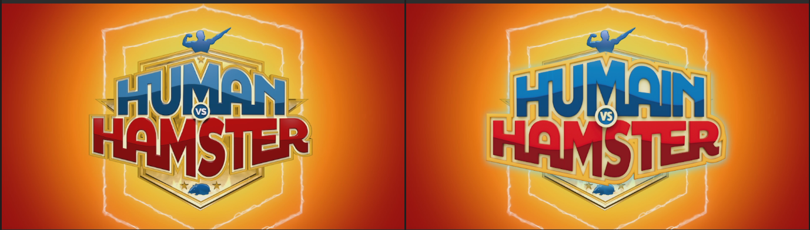
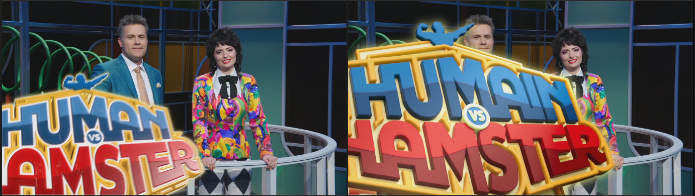
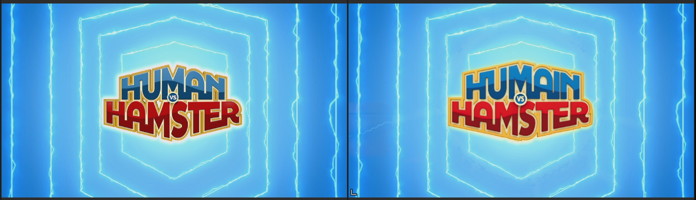
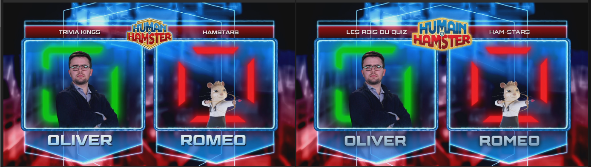
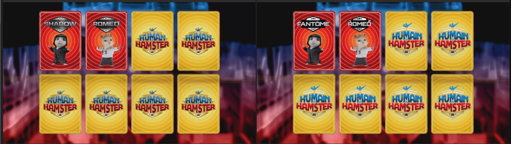
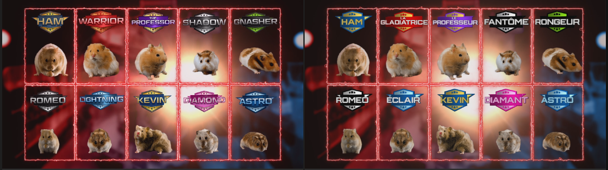
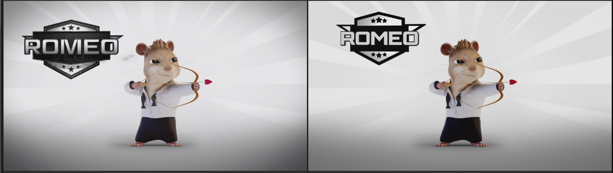
As no source artwork was supplied, the show logotype was reconstructed from broadcast reference as editable vector in Illustrator - each letterform, bevel, outline and colour band redrawn. The French localisation required adapting the wordmark to Humain vs Hamster. This file served as the master logo across the full package: bumps, transitions, lower thirds and name boards.
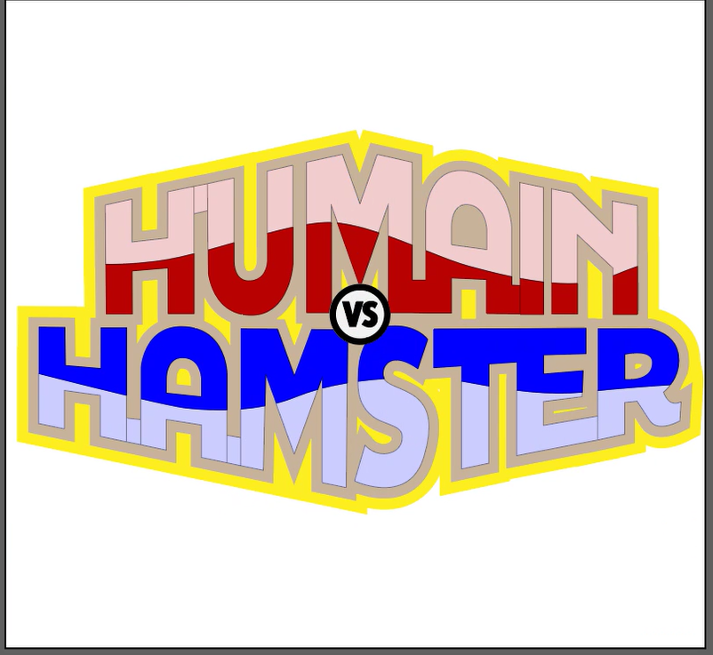
A 3D version of the title was additionally rebuilt in Cinema 4D to match the original's dimensional logo animations and transition elements.
To support consistent, repeatable localisation across episodes, all graphics were structured as a two-tier template system. A library of ready-to-use template compositions - organised by graphic type - wraps a set of shared master rigs. Each rig is exposed through the Essential Graphics panel, providing editors with a controlled interface containing only the parameters required for localisation.
Six exposed rigs in total. The L3D name-strap family exists in three variants - 1-line, 2-line and blue team - sharing one underlying design. Comp and control names shown are taken directly from the project.
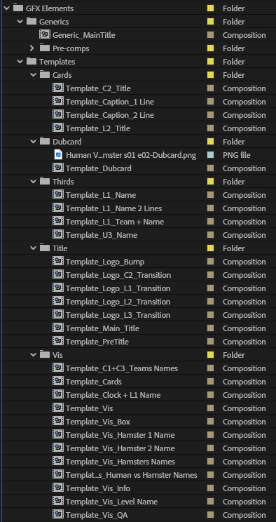
As all editable content is held in named text layers, the template system integrates directly with the studio's batch localisation script. The script matches a translation list to the timeline by timecode and populates the relevant layers automatically, generating a complete set of versioned compositions per episode without manual data entry.
Where the script is not used, editors can enter translations directly through the Essential Graphics panel. The templates are designed to support both workflows without modification - the automation adds efficiency, but the system functions independently of it.
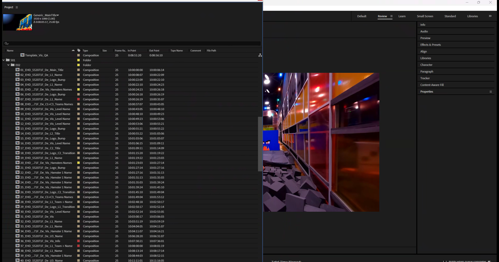
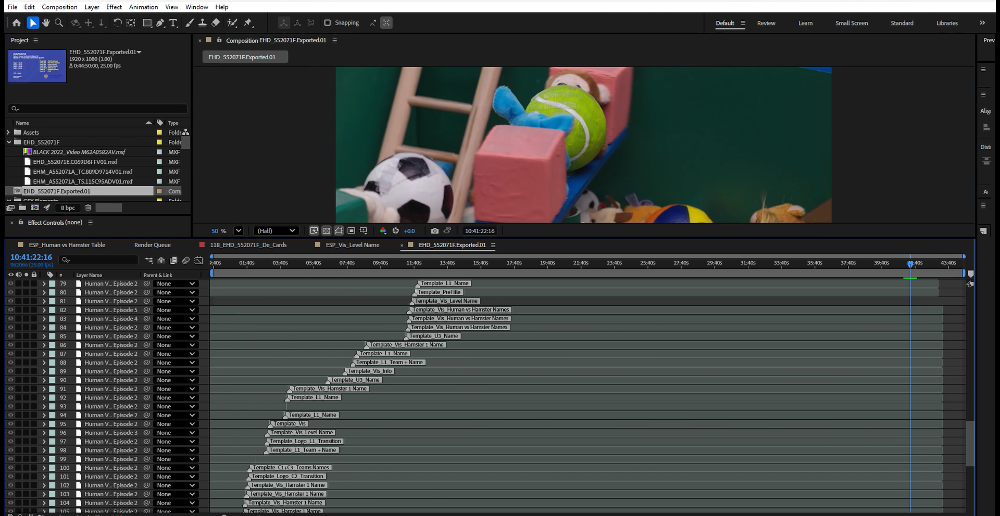
Every template in the package uses an identical animation control structure - Animate In and Animate Out toggles with corresponding Frames In and Frames Out sliders. This ensures consistent behaviour across all graphic types and allows timing to be adjusted without modifying keyframes directly. On more complex rigs such as ESP_Vis_Board Name, additional controls expose text fields, colour selections and fill properties within the same interface.
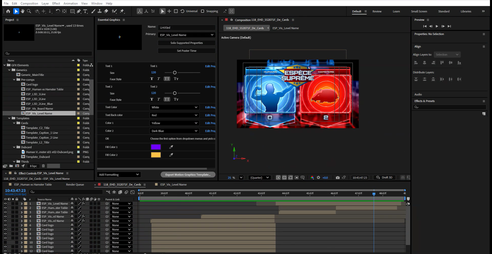
ESP_Vis_Board Name and ESP_Vis_Level Name support multiple on-screen colourways through stacked colour-menu controls. By selecting from preset options within the Effects panel, a single rig configuration produces the full range of variants used across the show - blue, gold, purple, pink and green - without duplicating compositions or modifying the underlying build.
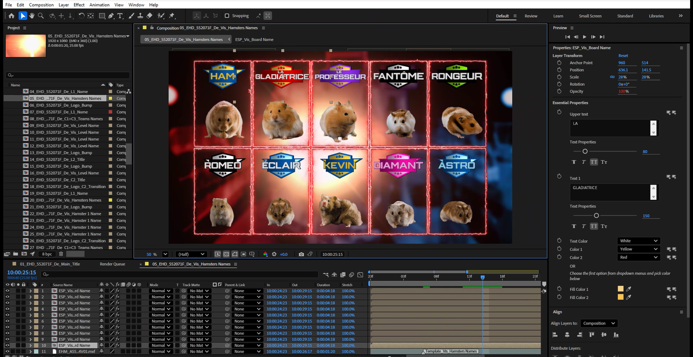
ESP_Vis_Board Name and ESP_Vis_Level Name are built in 3D space rather than as flat 2D compositions. Each incorporates a camera, multiple ambient light layers, a main canvas plane and shaped geometry. The depth and lighting were reconstructed from broadcast reference frames, with camera position and light behaviour matched by eye to replicate the appearance of the originals. The 3D construction is fully self-contained within the rig and requires no additional configuration from the editor.
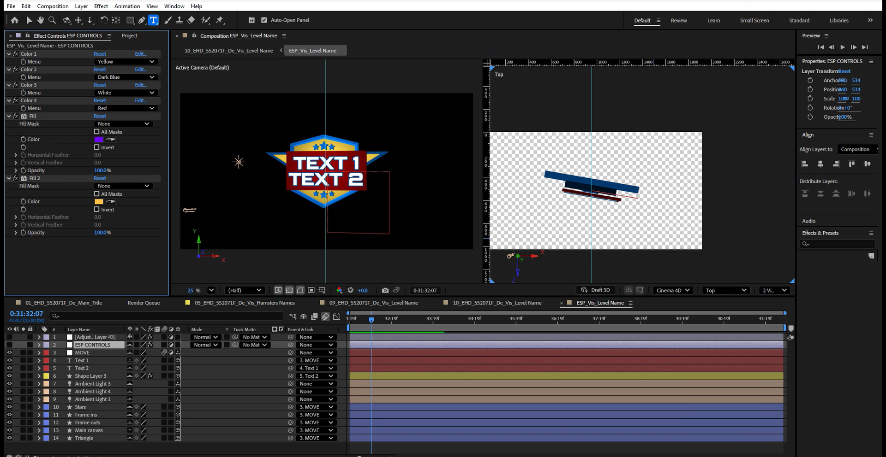
The challenge clock is driven by expressions rather than keyframes. A Slider Control holds the start time in seconds; one expression offsets this value against the current playback position to produce a continuously advancing count, and a second formats the output as a mm:ss string. Editors set a single value to position the clock at the correct point in the sequence; the display updates automatically for the duration of the composition.
// Slider Control expression - advances with playback effect("Slider Control")("Slider") + Math.floor(time) // Source text expression - formats output as mm:ss slider = effect("Slider Control")("Slider"); sec = slider % 60; min = Math.floor(slider / 60); function addZero(n){ return (n < 10) ? "0"+n : n; } slider > 0 ? addZero(min)+":"+addZero(sec) : "00:00"
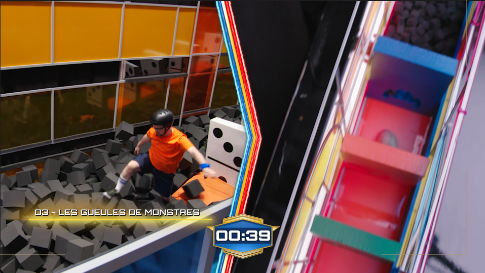
The same expression approach is used throughout the rig set - editable text layers drive the visible graphic via sourceText links, and opacity transitions are controlled by the Frames In and Frames Out sliders rather than manual keyframing.
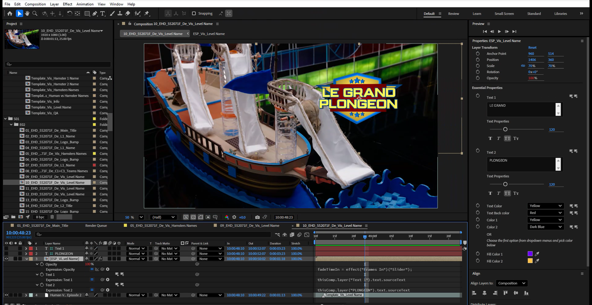
The template system covered the full episode graphic sequence - main title, pre-titles, contestant lower thirds, team names, challenge name cards, statistical overlays, the running clock and the closing dubcard. The same six rig configurations handled all localised content across the series through a consistent, repeatable workflow.
The approach reduced per-episode localisation to a populate-and-proof workflow. With rigs locked at the precomp level, the system can be operated by any member of the post team without risk to brand consistency. The same architecture that supported a full package reconstruction from reference also provides the structural foundation for efficient, scalable versioning across a series run.
Original package design: [original broadcaster's design team].
My role: full GFX recreation, Illustrator logo rebuild, Cinema 4D title rebuild and localisation toolkit at Warner Bros. Discovery.